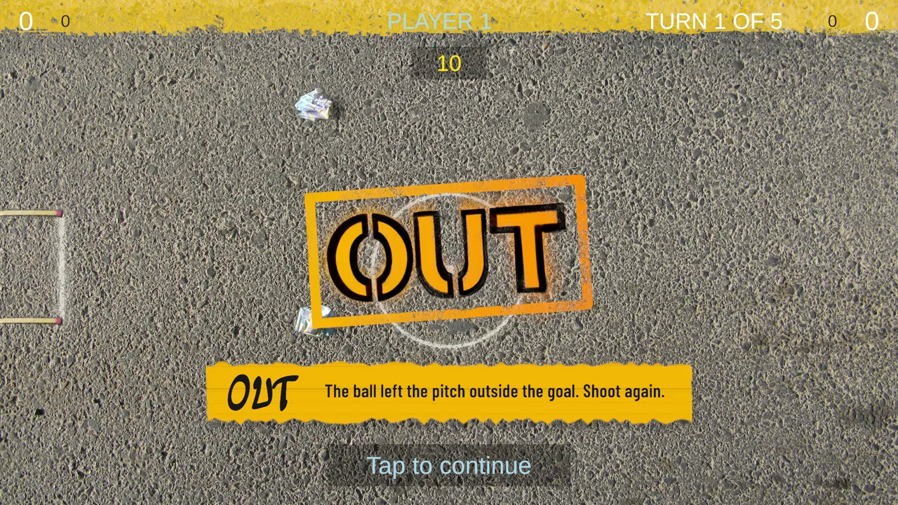
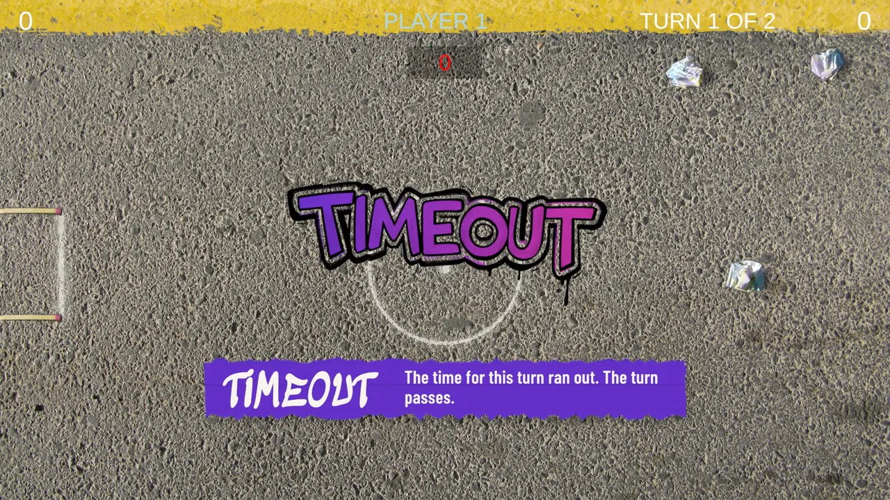
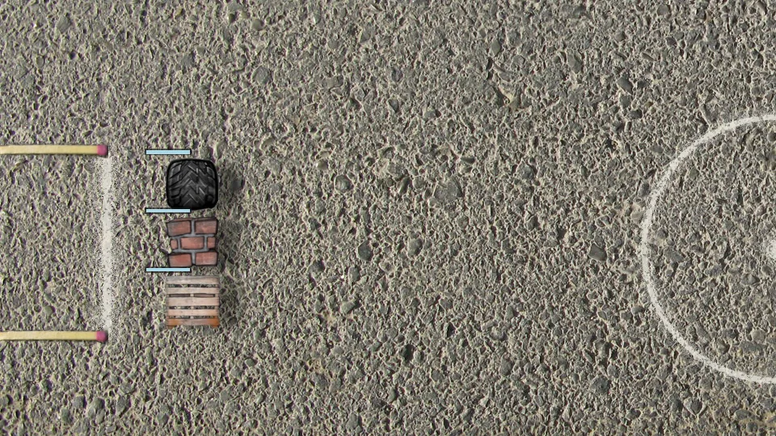
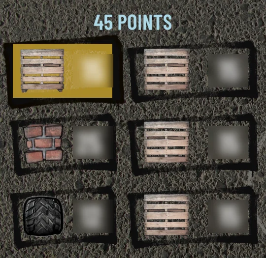
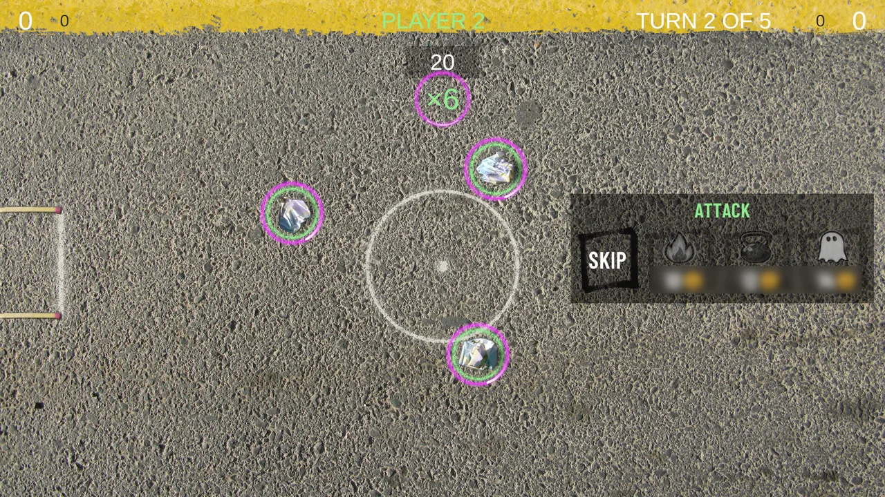
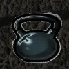
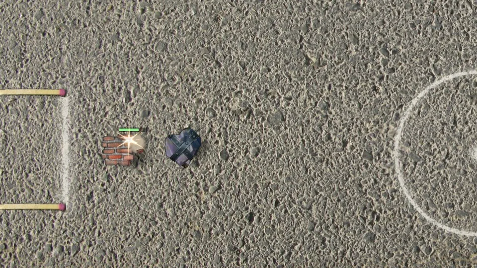
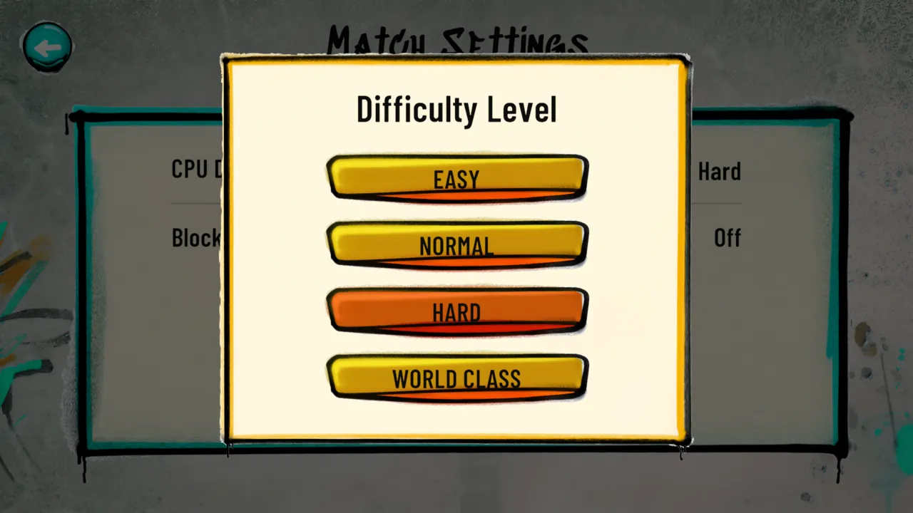

How to play 3Toop
Three balls, one goal, no players. Flick a ball between the other two, keep the passes going, and score.
1The match
Flick
Touch a ball, drag it, and let go. The ball leaves at the speed and in the direction of your drag, so a quick swipe is a hard shot and a slow one is a soft pass. There is no aiming line: your finger is the shot.
The one rule that matters
Every shot must pass between the other two balls without touching either of them. Do that and you have made a pass. Keep passing to work the balls up the pitch, then shoot at the goal on the left.
- You can score with any legal shot, even your first, but the farther you are from the goal the more care it takes.
- A goal only counts if that same shot also passed between the other two. The whole ball must cross the goal line.
- You can’t shoot the same ball twice in a row.
- Use the side walls like a pool cushion. A bounce restarts the pass, so the ball must go between the other two after it bounces.
Calls
When something goes wrong the game calls it, puts the three balls back, and you shoot again if your turn still has time left.
- FOUL
- The shot ball touched another ball, didn’t pass between the other two, or you grabbed a ball before the last shot finished. A goal from a shot that didn’t pass between them is also a foul.
- OUT
- A ball went past the goal line outside the goal.
- GOAL
- One point to you. The balls reset and you keep shooting.
- TIMEOUT
- Your turn’s time ran out. The turn passes.


The banner under a call explains it the first few times you see each kind of call. In Settings, Call Explanations can show it every time or turn it off, and Call Style changes how the calls look.
Turns and winning
- Each turn lasts 20 seconds, and you can take as many shots as you like in that time. The timer changes colour as your time runs low, then pulses and ticks through the last seconds.
- Your turn ends only when your time is up. Fouls, outs and goals just reset the balls.
- Each player gets five turns. Most goals wins.
- A draw? You can play Extra Time: one more turn each, on the same score. If that is a draw too, you can go again.
2Blockers
Blockers are small walls you put in front of the goal to stop your opponent scoring. Your blockers stop your opponent’s balls but not yours. They are on by default. You can turn them off in Match Settings.

Earn points
Every clean pass grows your chain. Points are banked when the chain ends:
- A goal banks your whole chain, plus a bonus.
- Damaging your opponent’s blocker banks some or all of it, more for a harder hit. Breaking one pays a little extra.
- A foul, an out or running out of time banks only part of it.
You can only hold so many points, and what you don’t spend shrinks a little at the end of each of your turns, so spend them.
Build
When your turn passes to your opponent, you get a few seconds to place one blocker in front of the goal, if you have the points, or to skip. You can have only a few blockers standing at once, and if you are behind on goals, everything costs less.

Break them
Blockers wear down a little every turn and take damage when a ball hits them hard. Hit your opponent’s blockers to clear the way and earn points while you do it.
Charged shots
Keep a long chain of passes going and your shots become charged. A charged shot hits blockers much harder, even brick. The ring round the ball shows how close you are.

Puddles and oil
Some arenas have hazards. A puddle slows a ball down and puts out a burning shot. An oil slick lets a ball slide further than you expect. A burning ball sets oil alight and clears it for the rest of the match.
3Attack items
At the start of your turn, before your first shot, the Attack tray offers three power-ups. Buy one with your points, or skip. It lasts for the rest of that turn, but a foul ends it. One item per turn, and it takes the place of charge while it lasts.
Fire
Your shots burn. The first wooden or rubber blocker a burning ball hits is cleared, and that puts the fire out. Brick only scorches. A puddle puts out the shot, but the next shot that turn still burns.

Heavy
Each ball you shoot is twice as heavy. It shoves the other balls further and hits blockers much harder, enough to break brick.
Ghost
Each shot passes straight through the first blocker it touches, without harming it, then is solid again.

4Playing the CPU
Pick the CPU’s level in Match Settings. It plays by exactly the same rules you do.

Tips
- Use all 20 seconds. A foul early in your turn costs only a few seconds, so keep shooting until the clock runs out.
- Short passes first. Soft passes keep the balls close and your chain growing. Shoot when the gap to the goal is clear.
- Mind the gap. Brushing a ball is a foul. When two balls are close, go wide or use a wall.
- Cash in. A goal banks your whole chain. A foul banks only part of it.
- Spend your points. Unspent points shrink every turn. A blocker in the open part of the goal is rarely wasted.
- Watch its chain. A CPU on a long chain of passes is about to shoot charged, and charged shots break even brick.
- Match your item to the wall. Fire for wood and rubber, Heavy or Ghost for brick.